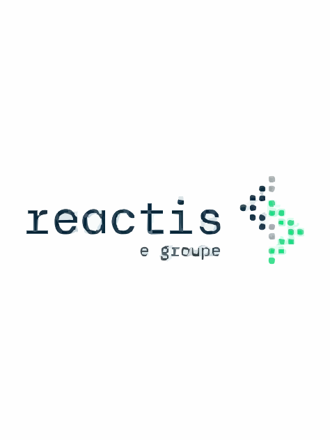
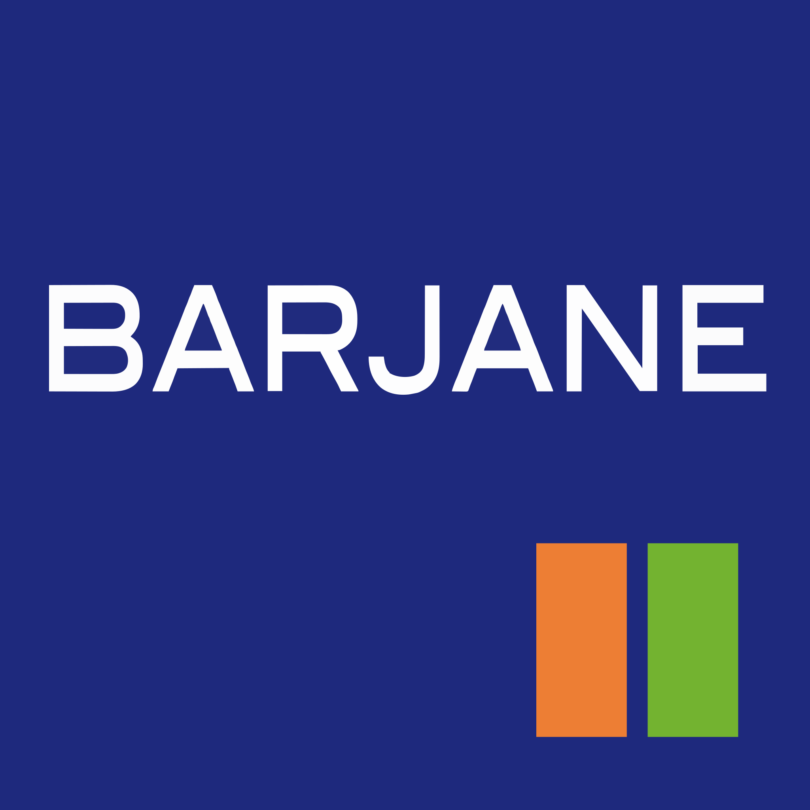
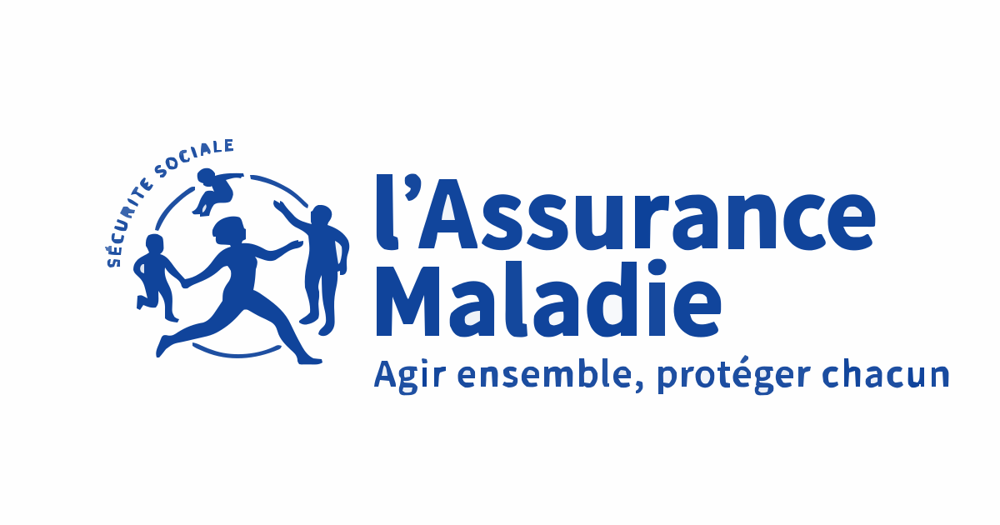

I am targeting roles that combine management responsibilities with technology and commercial impact. My objective is to lead projects where business strategy, client value, and software execution are aligned.
Career Goal
What I Am Building Toward
Education
Academic Path

EPITECH
Diplome d'Etablissement - Expert en Technologies de l'information (Bac +5)

McGill University
Certificate in Management (Bachelor Degree track)

HEC
AI Entrepreneurship Certificate
Education Earlier Education

Lycee Saint-Louis Sainte-Marie

BMSO - Bilingual Montessori School of Paris
Australian International School

Lycee Francais

Overseas Family School (OFS)

EtonHouse
Experience Internship Details

REACTIS Group - Software Developer Intern
Working on an aeronautical maintenance application, developing production Java features, and contributing to code quality and sprint delivery with the engineering team.

BARJANE - Internal IT Referent Intern
Managed IT support operations, improved infrastructure reliability, automated recurring processes, and supported website modernization initiatives.

CPAM (Assurance Maladie) - Java Developer Intern
Contributed to legacy-to-modern Java migration, refactoring, documentation, and stabilization with targeted fixes and testing support.
Certificates Certifications and Test Scores

The Mantu Manager Program (Business Acquisition)

Oxford Royale Academy

IELTS

TOEFL iBT
Community Volunteering Experience
Vice President of the BDE - EPITECH Marseille
- Organized student events (parties, integrations, LAN events) to strengthen campus cohesion.
- Managed the BDE office, led weekly meetings, and coordinated with administration.
- Planned annual priorities, budget tracking, and local partnerships.
- Managed social media communication and visual content for student life updates.
- Higher participation in BDE events over the year.
- Established local company partnerships to support activities.
- Improved internal and external communication for the BDE.
Cobra Keeper
- Led the Coding Club and Camp through workshops, programming challenges, and events.
- Coordinated the Cobras team and supported group motivation and execution.
- Organized open-day activities for prospective students and families.
- Increased participation in Coding Club and Camp activities.
- Reinforced team engagement and group dynamics.
Volunteer - Planete Perles (Les Perles de la Cote Bleue)
- Participated in recurring beach and natural-area cleanup operations.
- Guided children groups and raised awareness on environmental issues.
- Contributed directly to preserving natural spaces along the Cote Bleue.
- Helped educate dozens of children on environmental respect.
- Strengthened links between local community actions and ecology efforts.
Volunteer - Bootcamp Cote Bleue
- Moderated and edited YouTube videos to promote bootcamp sessions.
- Managed community communication across social platforms.
- Developed a modern website to improve online visibility.
- Participated in bootcamp sessions to support members and engagement.
- Increased digital visibility and participant growth.
- Built a stronger and more active social community.
- Improved group cohesion during sessions through active support.
Projects Additional Initiatives
JEB Incubator - Survivor Seminar EPITECH
Delivered in 21 days a web platform designed to showcase incubator projects and facilitate connections between startups, investors, and partners.
- Built project catalog pages, startup spaces, internal messaging, news, and event calendar features.
- Implemented a full backend with CRUD operations and synchronized database integration with an existing API.
- Developed a responsive, accessibility-focused frontend and an admin back-office for content, user, and statistics management.
- Worked in agile mode with continuous client feedback and evolving requirements on features, priorities, and design.
- Grade A for the project delivery.
- Functional solution delivered within a short timeline.
- Strengthened fullstack, UX/UI, client management, and agile collaboration skills.
Hackathon KEDGE Business School x EPITECH
Contributed to solving a real business challenge for Biotech One by combining technical perspective with market and strategic analysis.
- Analyzed ingredient profitability to recommend the strongest economic option.
- Performed market research and competitive analysis to identify trends, opportunities, and customer needs.
- Collected Voice of Customer insights through interviews and field feedback.
- Built a full business model including SWOT, value proposition, target markets, and cost estimations.
- Delivered a complete strategic report to Biotech One at the end of the hackathon.
- Developed stronger business analysis, marketing, and cross-school collaboration skills.
- Gained practical experience solving a real enterprise problem.
Core Strengths
Skills Snapshot
Technical
- Java, SQL, Python
- Web: HTML, CSS, JavaScript
- Git workflow and code quality tools
Professional
- Agile teamwork and sprint delivery
- Cross-functional communication
- Process optimization and automation
Languages
- English (bilingual)
- French (bilingual)
- Spanish (limited working proficiency)
- Chinese (elementary proficiency)